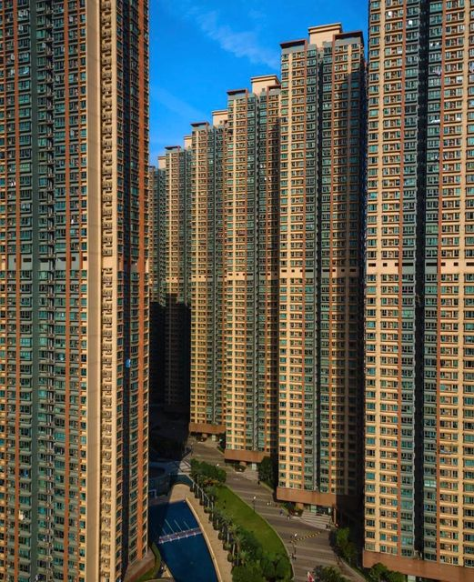
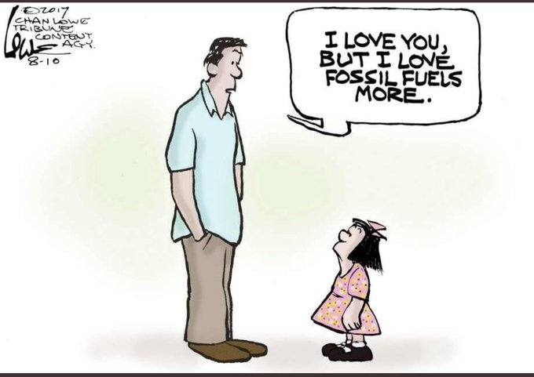
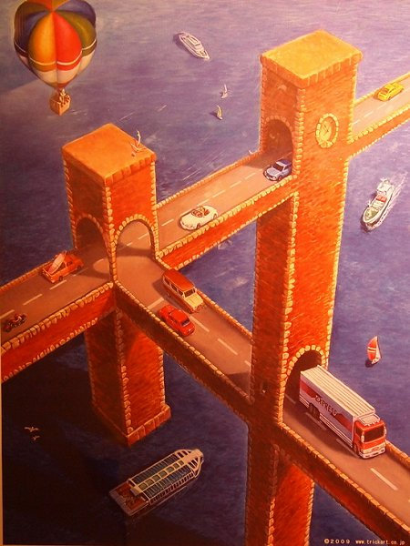
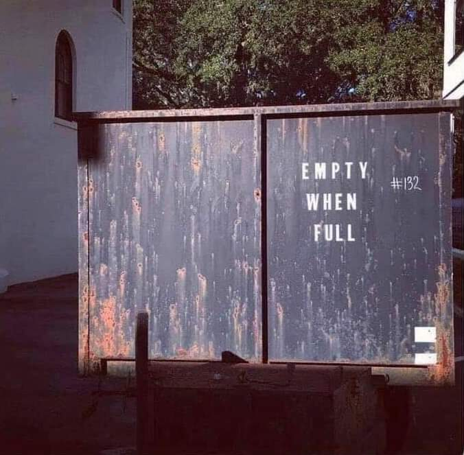
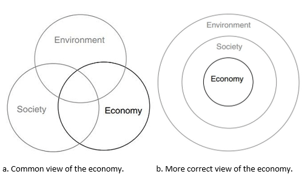

𝔇𝔜ℜ𝔈ℌ𝔄𝔘𝔊𝔈𝔑
YTRINGER
2022-09-19
1 / 2
samfunnsbygging
Sosial Kontroll
2022-09-14

Mailutveksling etter valget i Sverige september 2022 Hei Ja, trist at det går denne veien i Sverige. Klimaproblemene merkes nok ikke nok direkte i våre land ennå. Akutte problemer får hele oppmerksomheten. Jeg oppfatter det slik at (mesteparten av) SD’s framgang skyldes den frykten som…
Klimapolitikk
Oljestopp
2021-08-10

FN’s klimapanel publiserte igår en oppdatering av klimasituasjonen på kloden. Det ser ikke bra ut. FN’s Generalsekretær ber innstendig alle land om å stoppe letingen etter nye olje- og gassfelt. IEA har tidligere påpekt at Verden ikke trenger å finne mer olje og gass. Det som allerede er…
Privatisering
Hvilken kapitalisme skal vi velge?
2021-05-31

Regjeringen lager hakkemat av Jernbanen og gir fra seg nasjonal kontroll. Dette er foreldet ideologi. Hvis vi først skal ha en form for kapitalisme i Norge (som Arbeiderpartiet vil) må vi iallfall velge en som virker bedre enn dette rotet. Idag vet vi at Statskapitalisme virker best (se på…
Kapitalisme
Handelslogikk
2021-03-02

Stein Reegård i LO kommer med et hjertesukk om utviklingen i Norges EU-medlemskap (også kalt EØS-avatlen): Hvorfor skal EØS og ESA blandes inn i hvordan vi driver kommunale sykehjem og idrettsanlegg? EUs viktigste praktiske oppgave helt fra starten og var å fremme handel mellom land i Europa.…
Klima
Klimadommen
2020-12-23

Høyestrett har talt! Dommen har falt! KLIMADOMMEN. Natur og Ungdom og Greenpeace Norden anla saken for å få kjent tildelingen av utvinningsløyve for petroleum i Barentshavet ulovlig. Verden har allerede funnet mer olje- og gass enn det som kan forbrukes uten å ødelegge klimaet på planeten. Det er…
Oppussing
Mañana - på badet!
2020-12-21
Det siste året har jeg lært spansk - ikke språket, men tenkemåten - ‘the hard way’. Jeg har fått lære hva kulturutrykket ‘mañana’ kan innebære i praksis. Og jeg har fått lære det ikke av spanjoler, men av ‘våre egne’ her nede på Gran Canaria. Noen av oss har blitt…
««
«
1
2
»
»»
Please enable JavaScript to view the
comments powered by Disqus.
comments powered by
Disqus